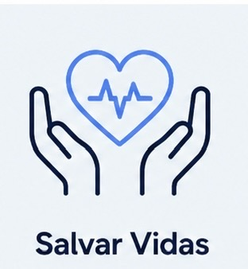

Alertas precisos por rua permitem evacuação antecipada e proteção de comunidades vulneráveis antes de desastres acontecerem
Uma plataforma de inteligência preditiva que utiliza dados climáticos, topográficos e simulações avançadas para antecipar desastres e planejar cidades mais resilientes.
Soluções pensadas para proteger vidas, reduzir impactos urbanos e promover cidades inteligentes e sustentáveis .

Alertas precisos por rua permitem evacuação antecipada e proteção de comunidades vulneráveis antes de desastres acontecerem
Minimizar danos em infraestrutura e patrimônio público e privado através de previsões precisas e planejamento inteligente.
Monitoramento de umidade, calor e ventilação para criar ambientes urbanos mais saudáveis e confortáveis.
Climática Transparência de dados e democratização do acesso à informação climática para todas as comunidades.
Até R$ 4 milhões preservados através de ações preventivas.
Aproximadamente R$ 1,9 milhão em prejuízos evitados.
Mais de R$ 750 mil preservados em cenários críticos.
Possibilidade de até R$ 4 milhões em prejuízos .

Hospedagem em AWS e Azure para alta disponibilidade, segurança e performance.

Plataforma flexível com pagamento por uso e implantação simplificada.
Adaptável para bairros, cidades e operações urbanas de grande porte.
Evolui a gestão urbana de reativa para preditiva, permitindo decisões preventivas mais inteligentes.
Menor impacto financeiro através de prevenção eficiente e planejamento estratégico.
Aceleração de processos urbanos e licenciamentos ambientais com base em dados atualizados.
Comunicação transparente e monitoramento contínuo fortalecendo a relação com a sociedade.
solicite uma demonstração da plataforma Zenite e descubra como antecipar riscos ambientais urbanos.
Falar com Especialista